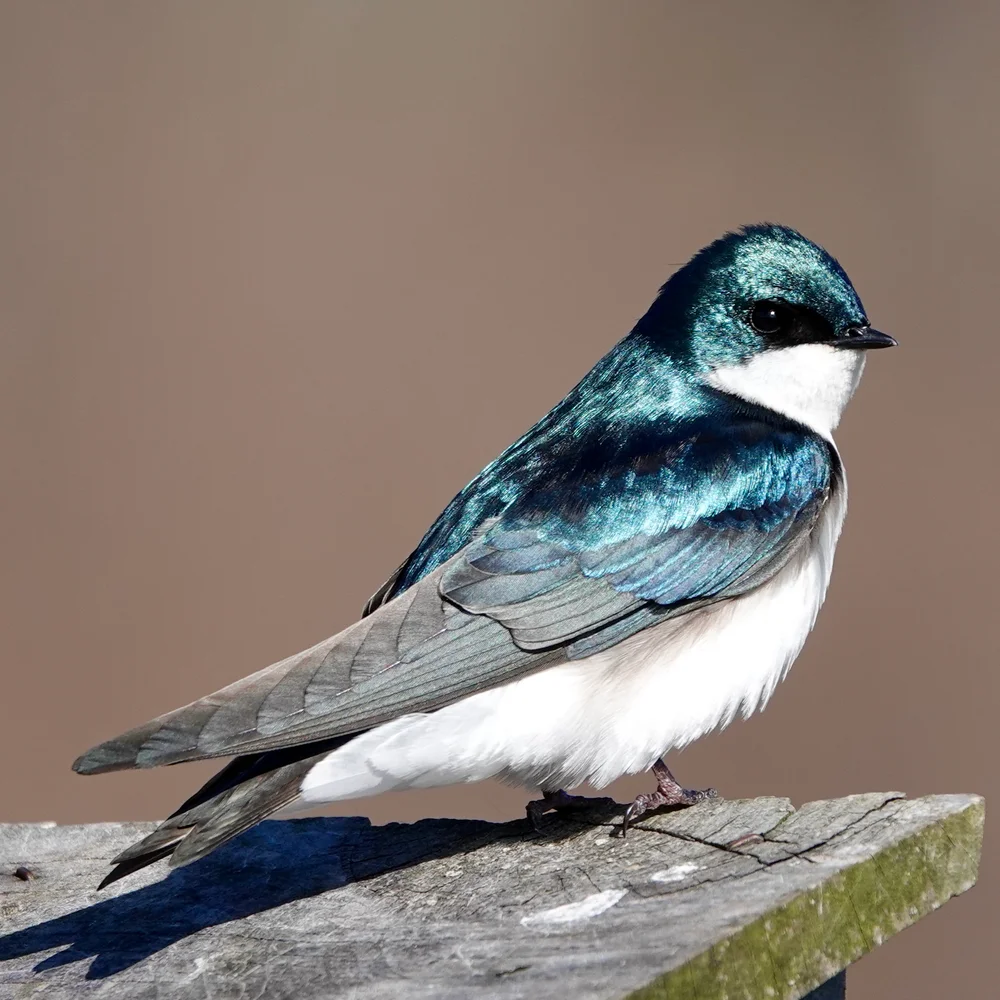

Exploring the internet's funniest conspiracy theories.
START INVESTIGATING
What is this site?
Have you ever wondered why socks disappear in the dryer?
Why the Wi-Fi only stops working when homework is due?
Or why every group project somehow ends with one person doing all of the work?
This website investigates the questions that science still hasn't answered.
At least, that's what we tell ourselves.
Featured Theories

Birds Aren't Real
What if every bird you've ever seen is actually a government survellance drone?
LEARN MORE
The Missing Sock Mystery
Where do the missing socks go? We may never know
LEARN MORE
Why Group Projects Never Work
A social experiment?
Probably.
LEARN MORE
Disclaimer
This website is intended for humor and entertainment purposes only. Please do not use this website as scientific evidence in your next class presentation.
THE TOTALLY SERIOUS CONSPIRACY THEORY GUIDE
"The truth is out there... Probably"
HOME
INTERNET MYSTERIES
EVERYDAY CONSPIRACIES
FOLLOW US